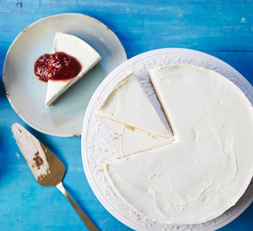

Cheesecake

Description
Vanilla cheesecake is my favourite cake, and consists of a biscuit crumb base, with a thick layer of vanilla-ry cream cheese cream on top.
This cake doesn't require baking, and is served slightly below room temperature.
Ingredients
- 250g digestive biscuits
- 100g butter, melted
- 1 vanilla pod
- 600g soft cheese
- 100g icing sugar
- 280ml double cream
- fruit compote, to serve (strawberry or raspberry work well)
Steps
- Butter and line a 23cm loose-bottomed tin with baking parchment. Put the digestive biscuits in a plastic food bag and crush to crumbs using a rolling pin – or blitz in a food processor. Transfer to a bowl, then pour over the melted butter. Mix thoroughly until the crumbs are completely coated. Tip them into the prepared tin and press firmly down into the base to create an even layer. Chill in the fridge for 1 hr to set firmly.
- To remove the vanilla seeds from their pod, slice the pod in half lengthways, leaving the tip intact, so that the two halves are still joined. Holding onto the tip of the pod, scrape out the seeds using the back of a kitchen knife.
- To make the filling, place the soft cheese, icing sugar and vanilla seeds in a bowl, then beat with an electric mixer until smooth. Tip in the double cream and continue beating until the mixture is completely combined. Now spoon it onto the biscuit base, working from the edges inwards and making sure that there are no air bubbles. Smooth the top of the cheesecake down with the back of a dessert spoon or spatula. Leave to set in the fridge overnight.
- Bring the cheesecake to room temperature about 30 mins before serving. To un-mould, place the base on top of a can, then gradually pull the sides of the tin down. Slip the cake onto a serving plate, removing the lining paper and base. Slice and serve with a fruit compote of your choice.